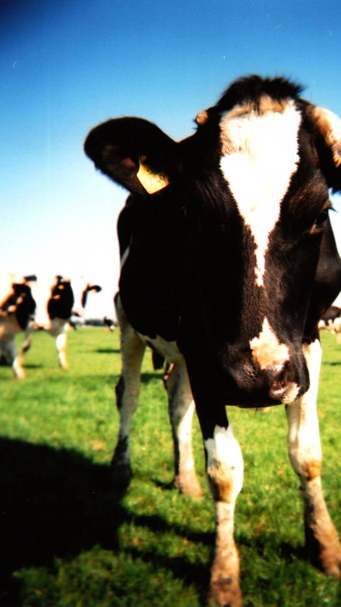

<ion-header>
  <ion-toolbar>
    <ion-title>
      Some books
    </ion-title>
  </ion-toolbar>
</ion-header>

<ion-content padding color="light">
  <mat-card>
    <mat-card-title>All About Cows</mat-card-title>
    <mat-card-subtitle>The first animal picture I saw online</mat-card-subtitle>
    
    <mat-card-actions align="end">
      <button mat-flat-button color="primary" routerLink="/cow">Read</button>
      <button mat-button>Read Later</button>
    </mat-card-actions>
  </mat-card>
</ion-content>
